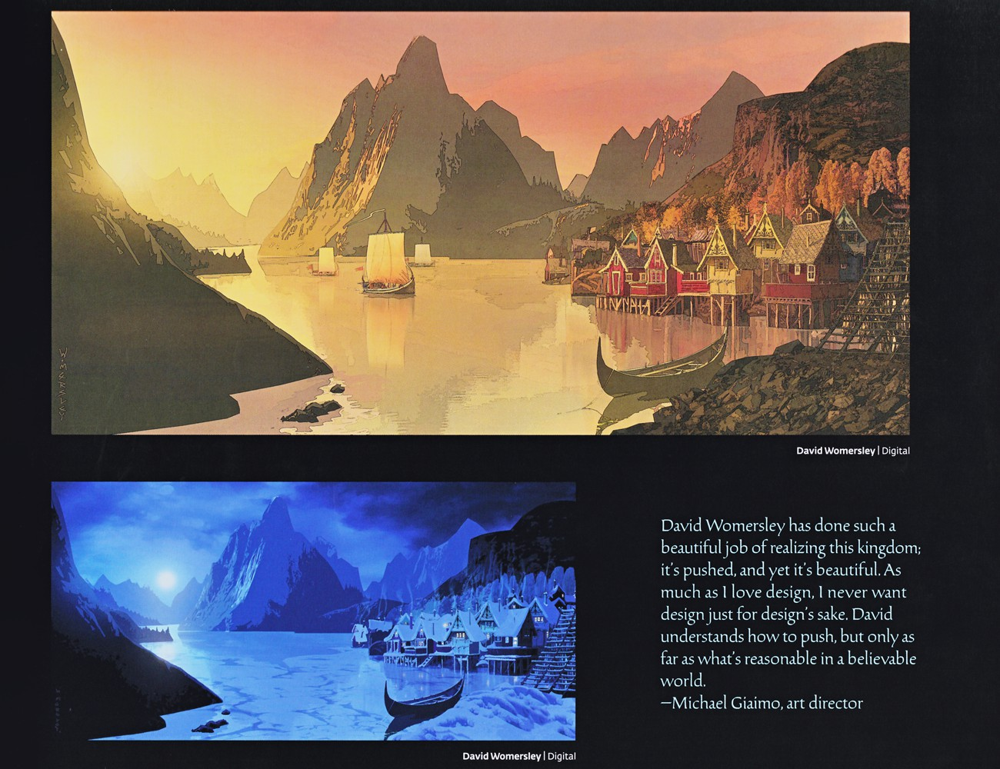

🏰 主题乐园 · 香港迪士尼乐园

阿伦黛尔 · 概念图香港迪士尼「魔雪奇缘世界」以阿伦黛尔为蓝本——概念图为乐园的北欧村镇定下基调。 | 来源：官方设定集《The Art of Frozen》
香港 · 魔雪奇缘（World of Frozen）
2023 年 11 月 20 日，香港迪士尼乐园开幕全球首个、也是目前最大的 Frozen 主题园区「魔雪奇缘」（World of Frozen）——为系列十周年献礼，把阿伦黛尔王国 1:1 搬进了乐园。
🌍 园区概览
「魔雪奇缘」位于香港迪士尼乐园，是全球第一座以《冰雪奇缘》为主题的独立园区。园区复刻了阿伦黛尔村、北山与「森林之梦」等标志性场景，游客可以走进故事之中，而不只是观看故事。
🎢 主要设施
- 魔雪奇缘之旅（Frozen Ever After）——乘船顺流进入阿伦黛尔与北境，重温电影经典场面。
- 奥肯雪橇滑车（Wandering Oaken's Sliding Sleighs）——以奥肯杂货铺为主题的家庭过山车，全球首现。
- 林间游戏屋（Playhouse in the Woods）——面向亲子游客的森林互动空间。
✨ 细节亮点
园区内的店铺、餐饮与街头演出均做了本土化设计；阿伦黛尔港的船只、北山的极光天幕是拍照热点。开幕时点恰逢系列十周年，被官方称为「让 Let It Go 以从未有过的方式唱响」。
🧭 旅行提示
三座 Frozen 园区的船型乘骑同源异构——香港「魔雪奇缘之旅」、东京「安娜与艾莎的 Frozen Journey」是最完整的两条暗线；装扮、餐饮与街头演出也各有本土化细节，值得对比打卡。